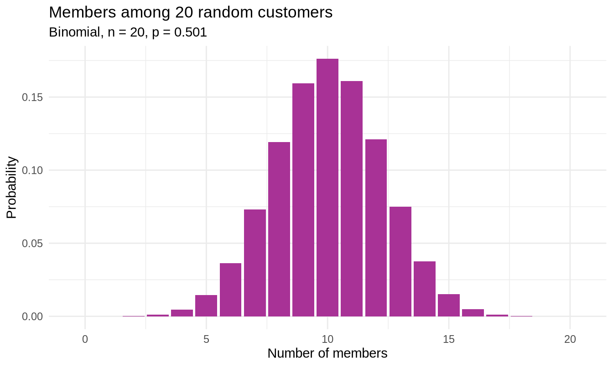
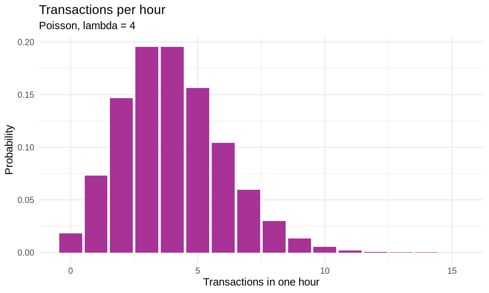
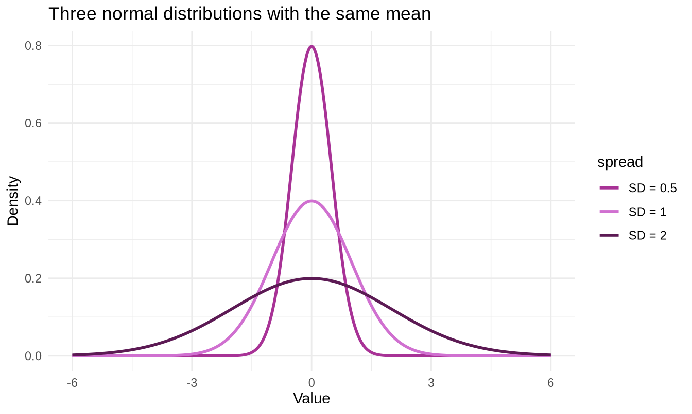
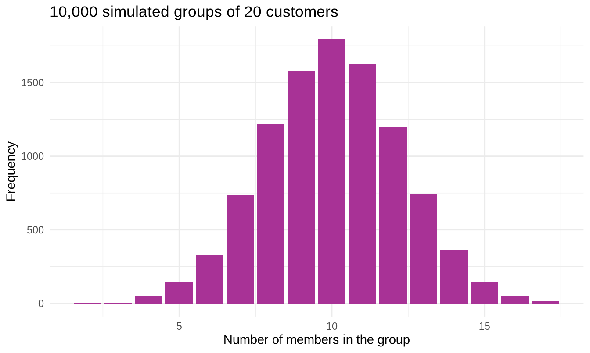

library(tidyverse)
library(readxl)
sales <- read_excel("../data/supermarket_sales.xlsx")3.1 Probability Distributions
New R this week
R uses a single naming system for every distribution. Learn it once and you know all of them.
| Prefix | Question it answers | Example |
|---|---|---|
d |
What is the probability of exactly this value? | dbinom(3, 10, 0.2) |
p |
What is the probability of this or less? | pnorm(500, 323, 245) |
q |
Which value sits at this probability? | qnorm(0.95, 323, 245) |
r |
Give me random draws from this distribution | rnorm(100, 323, 245) |
Attach a prefix to a distribution name: binom, pois, norm, unif, t. So pbinom, rpois, qnorm and so on. That is 20 functions from one table.
Objectives
By the end of this notebook you will be able to:
- Explain what a random variable is, and the difference between discrete and continuous
- Use the binomial distribution to model counts of successes in a fixed number of trials
- Use the Poisson distribution to model counts of events in an interval
- Use the normal distribution to model continuous measurements
- Convert any value to a z-score and interpret it
- Read the
d/p/q/rfunction family fluently - Choose the right distribution for a business situation
Setup
1. From describing to modelling
Section 2 described the 1,000 transactions you have. This section does something different: it builds a model of the process that generates transactions, so you can reason about ones you have not seen yet.
That shift is what makes statistics useful to a business. Describing last month’s sales is bookkeeping. Saying “there is a 5 percent chance we run out of stock next Tuesday” is planning.
A random variable is a numerical outcome of a process whose result is not known in advance. Two kinds:
| Type | What it can be | Examples here |
|---|---|---|
| Discrete | Separate, countable values | Quantity (1, 2, 3…), number of complaints |
| Continuous | Any value in a range | Total, Unit price, time between customers |
The distinction matters because the two kinds need different mathematics. For discrete variables you can ask “what is the probability of exactly 5?” For continuous variables that question has no useful answer - the probability of a transaction being exactly 323.0000… is zero - so you ask “what is the probability of between 300 and 350?” instead.
TipA probability distribution
A probability distribution is a rule that assigns probability to each possible outcome of a random variable.
Think of it as the shape a histogram would settle into if you could collect infinitely many observations.
2. The binomial distribution
Use the binomial when you count how many successes in a fixed number of independent attempts, each with the same probability of success.
Four conditions must hold:
- A fixed number of trials, called
n - Each trial has only two outcomes - success or failure
- The probability of success,
p, is the same every time - Trials are independent - one outcome does not affect another
A business question
About half of the chain’s customers are members. If 20 customers walk in, what is the chance that exactly 12 of them are members?
# First, the actual member rate in our data
p_member <- mean(sales$`Customer type` == "Member")
p_member#> [1] 0.501That line is worth reading carefully. sales$\Customer type` == “Member”produces a column ofTRUE/FALSE. R treatsTRUEas 1 andFALSEas 0, so taking the mean of that column gives the **proportion** that areTRUE`. This is a very common R idiom and you will use it constantly.
# Probability of exactly 12 members out of 20 customers
dbinom(12, size = 20, prob = p_member)#> [1] 0.1210944About a 12 percent chance. Now some more useful questions:
# 12 or fewer members
pbinom(12, size = 20, prob = p_member)#> [1] 0.8664802# More than 12 members (note: 1 minus "12 or fewer")
1 - pbinom(12, size = 20, prob = p_member)#> [1] 0.1335198
WarningThe off-by-one trap
pbinom(12, ...) means “12 or fewer”, including 12.
So “more than 12” is 1 - pbinom(12, ...), not 1 - pbinom(13, ...). Getting this wrong by one is the most common error with discrete distributions. When in doubt, write out the values you want to include.
Seeing the whole distribution
binom_dist <- tibble(
members = 0:20,
probability = dbinom(0:20, size = 20, prob = p_member)
)
ggplot(binom_dist, aes(x = members, y = probability)) +
geom_col(fill = "#A83296") +
labs(title = "Members among 20 random customers",
subtitle = paste0("Binomial, n = 20, p = ", round(p_member, 3)),
x = "Number of members", y = "Probability") +
theme_minimal()
The distribution peaks at 10, which is what you would expect when half of all customers are members. Its mean is n times p, and its spread is sqrt(n * p * (1 - p)):
n <- 20
tibble(
mean = n * p_member,
sd = sqrt(n * p_member * (1 - p_member))
)#> # A tibble: 1 × 2
#> mean sd
#> <dbl> <dbl>
#> 1 10.0 2.24
NoteYour turn
About one third of transactions are paid by Ewallet. Out of 15 customers, what is the probability that fewer than 4 pay by Ewallet?
p_ewallet <- mean(sales$Payment == "______")
# "Fewer than 4" means 3 or fewer
pbinom(____, size = ____, prob = p_ewallet)
NoteShow the answer
p_ewallet <- mean(sales$Payment == "Ewallet")
pbinom(3, size = 15, prob = p_ewallet)The key step is translating “fewer than 4” into “3 or fewer”. pbinom always includes the value you give it, so you must subtract one from a strict inequality.
3. The Poisson distribution
Use the Poisson when you count how many events occur in a fixed interval of time or space, and there is no natural upper limit.
The binomial asks “how many of these 20?” The Poisson asks “how many will happen at all?”
| Situation | Distribution |
|---|---|
| Of 20 customers, how many are members? | Binomial (there is a maximum of 20) |
| How many customers arrive in the next hour? | Poisson (no fixed maximum) |
| Of 50 items shipped, how many are damaged? | Binomial |
| How many complaints arrive this week? | Poisson |
The Poisson needs only one number: lambda, the average rate of events per interval.
A business question
The three branches together handled 1,000 transactions over about 90 days. Suppose a branch averages 4 transactions per hour. Staffing needs to cope with busy hours.
lambda <- 4
# Exactly 6 transactions in an hour
dpois(6, lambda = lambda)#> [1] 0.1041956# 6 or fewer
ppois(6, lambda = lambda)#> [1] 0.889326# More than 8 - a genuinely busy hour
1 - ppois(8, lambda = lambda)#> [1] 0.02136343pois_dist <- tibble(
transactions = 0:15,
probability = dpois(0:15, lambda = lambda)
)
ggplot(pois_dist, aes(x = transactions, y = probability)) +
geom_col(fill = "#A83296") +
labs(title = "Transactions per hour",
subtitle = "Poisson, lambda = 4",
x = "Transactions in one hour", y = "Probability") +
theme_minimal()
Notice the shape is right-skewed. There is a hard floor at zero - you cannot have negative transactions - but no ceiling, so the tail runs to the right. This is why count data so often fails a normality check, as you saw in section 2.
TipA useful oddity of the Poisson
For a Poisson distribution the mean and the variance are both lambda.
That gives you a free diagnostic. If you have count data whose variance is much larger than its mean, a Poisson model is probably wrong - the events are not occurring independently, perhaps because they arrive in clusters.
Why the shape matters for staffing
tibble(
capacity = 4:10,
prob_overwhelmed = round(1 - ppois(4:10, lambda = 4), 4)
)#> # A tibble: 7 × 2
#> capacity prob_overwhelmed
#> <int> <dbl>
#> 1 4 0.371
#> 2 5 0.215
#> 3 6 0.111
#> 4 7 0.0511
#> 5 8 0.0214
#> 6 9 0.0081
#> 7 10 0.0028Read that table as a manager. If you staff for the average of 4 transactions an hour, you are overwhelmed about 37 percent of the time. Staffing for 8 drops that to around 2 percent.
This is the entire point of probability distributions in business: planning for the average guarantees you fail about half the time. You have to plan for the tail.
NoteYour turn
A branch receives an average of 2.5 customer complaints per week. What is the probability of a week with no complaints at all?
dpois(____, lambda = ____)
NoteShow the answer
dpois(0, lambda = 2.5)About 8 percent. A complaint-free week is uncommon but not remarkable - which is worth knowing before anyone declares a quality initiative a success on one good week’s evidence.
4. The normal distribution
The most important continuous distribution. It is symmetric, bell-shaped, and defined by exactly two numbers: the mean (where the centre sits) and the standard deviation (how wide it is).
norm_demo <- tibble(
x = seq(-6, 6, length.out = 400)
) |>
mutate(
`SD = 1` = dnorm(x, mean = 0, sd = 1),
`SD = 2` = dnorm(x, mean = 0, sd = 2),
`SD = 0.5` = dnorm(x, mean = 0, sd = 0.5)
) |>
pivot_longer(-x, names_to = "spread", values_to = "density")
ggplot(norm_demo, aes(x = x, y = density, colour = spread)) +
geom_line(linewidth = 1) +
scale_colour_manual(values = c("#A83296", "#D070D0", "#5C1A54")) +
labs(title = "Three normal distributions with the same mean",
x = "Value", y = "Density") +
theme_minimal()
All three are centred at zero. The standard deviation alone controls how spread out they are.
The empirical rule
For any normal distribution:
| Within | Contains about |
|---|---|
| 1 standard deviation of the mean | 68 percent of values |
| 2 standard deviations | 95 percent |
| 3 standard deviations | 99.7 percent |
Verify it in R rather than taking it on trust:
tibble(
within_sd = 1:3,
proportion = round(pnorm(1:3) - pnorm(-(1:3)), 4)
)#> # A tibble: 3 × 2
#> within_sd proportion
#> <int> <dbl>
#> 1 1 0.683
#> 2 2 0.954
#> 3 3 0.997pnorm(1) - pnorm(-1) is “the area below +1 minus the area below -1”, which is the area between them. That is the 68 percent.
Applying it to the ratings data
Rating is not perfectly normal - you saw that in section 2 - but it is symmetric enough to illustrate the method.
r_mean <- mean(sales$Rating)
r_sd <- sd(sales$Rating)
tibble(mean = round(r_mean, 3), sd = round(r_sd, 3))#> # A tibble: 1 × 2
#> mean sd
#> <dbl> <dbl>
#> 1 6.97 1.72# What proportion of customers should rate us below 5, if ratings were normal?
pnorm(5, mean = r_mean, sd = r_sd)#> [1] 0.1255119# What proportion actually did?
mean(sales$Rating < 5)#> [1] 0.153The model’s prediction and the reality differ. That gap is the model being imperfect, and noticing it is more valuable than the calculation itself. A model is a simplification you adopt deliberately, not a truth you discover.
Going the other way with qnorm
pnorm takes a value and returns a probability. qnorm does the reverse.
# Which rating do the bottom 10 percent of customers fall below?
qnorm(0.10, mean = r_mean, sd = r_sd)#> [1] 4.770251# Which rating marks the top 5 percent?
qnorm(0.95, mean = r_mean, sd = r_sd)#> [1] 9.799513This is how you set thresholds. “Flag any customer rating in the bottom 10 percent for follow-up” becomes an actual number you can put in a report.
5. Z-scores and the standard normal
A z-score answers: how many standard deviations is this value from the mean?
\[z = \frac{x - \mu}{\sigma}\]
It converts any normal distribution into the standard normal - mean 0, standard deviation 1 - which is what the printed z-tables in your course folder tabulate.
# A customer who left a rating of 9. How unusual is that?
z <- (9 - r_mean) / r_sd
z#> [1] 1.179636A z-score of about 1.2 means this rating sits 1.2 standard deviations above average.
# What proportion of customers rate us 9 or lower?
pnorm(z)#> [1] 0.8809276# So what proportion rate us above 9?
1 - pnorm(z)#> [1] 0.1190724
TipWhy z-scores exist
They make incomparable things comparable.
A student scoring 78 on a maths exam and 84 on a history exam has done better in history - unless the maths exam was much harder. Convert both to z-scores and you can say which performance was more impressive relative to everyone else who sat the same paper.
The same logic lets you compare a branch’s sales performance with its customer satisfaction performance, even though one is measured in currency and the other on a 1-to-10 scale.
Standardising a whole column
sales_z <- sales |>
mutate(
total_z = (Total - mean(Total)) / sd(Total),
rating_z = (Rating - mean(Rating)) / sd(Rating)
)
sales_z |>
select(`Invoice ID`, Total, total_z, Rating, rating_z) |>
arrange(desc(total_z)) |>
head(5)#> # A tibble: 5 × 5
#> `Invoice ID` Total total_z Rating rating_z
#> <chr> <dbl> <dbl> <dbl> <dbl>
#> 1 860-79-0874 1043. 2.93 6.6 -0.217
#> 2 687-47-8271 1039. 2.91 8.7 1.01
#> 3 283-26-5248 1034. 2.89 4.5 -1.44
#> 4 751-41-9720 1024. 2.85 8 0.598
#> 5 303-96-2227 1022. 2.84 4.4 -1.50R has a built-in shortcut, scale(), though it returns a matrix rather than a plain column, so the explicit version above is clearer while you are learning.
# A standardised column always has mean 0 and sd 1
tibble(
mean_z = round(mean(sales_z$total_z), 10),
sd_z = sd(sales_z$total_z)
)#> # A tibble: 1 × 2
#> mean_z sd_z
#> <dbl> <dbl>
#> 1 0 1
WarningStandardising does not make data normal
Converting to z-scores shifts and rescales a distribution. It does not change its shape.
Total was right-skewed in section 2, and total_z is exactly as right-skewed. Students frequently assume standardising fixes non-normality. It does not, and no amount of z-scoring will make a skewed variable bell-shaped.
Using z-scores to find unusual transactions
sales_z |>
filter(abs(total_z) > 2.5) |>
select(`Invoice ID`, Branch, `Product line`, Total, total_z) |>
arrange(desc(total_z))#> # A tibble: 17 × 5
#> `Invoice ID` Branch `Product line` Total total_z
#> <chr> <chr> <chr> <dbl> <dbl>
#> 1 860-79-0874 C Fashion accessories 1043. 2.93
#> 2 687-47-8271 A Fashion accessories 1039. 2.91
#> 3 283-26-5248 C Food and beverages 1034. 2.89
#> 4 751-41-9720 C Home and lifestyle 1024. 2.85
#> 5 303-96-2227 B Home and lifestyle 1022. 2.84
#> 6 744-16-7898 B Home and lifestyle 1022. 2.84
#> 7 271-88-8734 C Fashion accessories 1021. 2.84
#> 8 234-65-2137 C Home and lifestyle 1004. 2.77
#> 9 554-42-2417 C Sports and travel 1002. 2.76
#> 10 325-77-6186 A Home and lifestyle 952. 2.56
#> 11 280-17-4359 C Health and beauty 950. 2.55
#> 12 219-22-9386 B Sports and travel 945. 2.53
#> 13 702-83-5291 C Fashion accessories 943. 2.52
#> 14 731-81-9469 C Sports and travel 943. 2.52
#> 15 817-69-8206 B Electronic accessories 942. 2.52
#> 16 393-65-2792 C Food and beverages 940. 2.51
#> 17 751-69-0068 C Sports and travel 938. 2.50abs() takes the absolute value, so this catches unusually large and unusually small values in one condition.
This is a second outlier rule to sit alongside the 1.5 x IQR rule from section 2. They disagree sometimes, and neither is authoritative - the z-score rule is pulled around by the very outliers it is trying to find, because extreme values inflate the standard deviation used to compute it.
6. Choosing the right distribution
This is the part that matters in practice, and the part exams test.
| If you are counting… | And… | Use |
|---|---|---|
| Successes in a fixed number of trials | Each trial is independent, same probability | Binomial |
| Events in an interval of time or space | No fixed maximum, constant average rate | Poisson |
| A continuous measurement | Symmetric, most values near the centre | Normal |
| Any outcome equally likely in a range | No value preferred | Uniform |
Some worked judgements:
- Of 200 emails sent, how many are opened? Fixed number, two outcomes, roughly constant probability. Binomial.
- How many customers enter the shop between 2pm and 3pm? Counting events in an interval, no maximum. Poisson.
- What will tomorrow’s total revenue be? A continuous amount built from many independent transactions. Normal is a reasonable first model.
- How many defective units in a batch of 500? Fixed number of trials. Binomial.
- How many machine breakdowns this month? Events in an interval. Poisson.
NoteSelf-check
A call centre wants to model how many calls arrive between 9am and 10am. A colleague suggests using a binomial distribution “because each minute either has a call or does not”. What is wrong with that reasoning?
NoteShow the answer
Two things.
First, a minute can contain more than one call. The binomial requires each trial to be a clean success or failure, but “this minute had 3 calls” breaks that.
Second, and more fundamentally, there is no fixed number of trials. You could slice the hour into minutes, or seconds, or milliseconds, and the answer should not depend on how finely you chop up time. That the model changes when you change an arbitrary choice is a sign the model is wrong.
The Poisson distribution is precisely the limit of the binomial as the trials get infinitely small and numerous, which is why it is the right tool for events in continuous time.
7. Simulation - checking your reasoning
The r functions generate random draws. This lets you verify an answer you worked out with formulas, which is the single best habit you can build in this course.
set.seed(2024)
# Simulate 10,000 groups of 20 customers each
simulated <- rbinom(10000, size = 20, prob = p_member)
# How often were exactly 12 members?
mean(simulated == 12)#> [1] 0.12# Compare with the exact formula
dbinom(12, size = 20, prob = p_member)#> [1] 0.1210944The two agree to about two decimal places. If they had not, one of them would be wrong, and you would know to look again.
tibble(members = simulated) |>
ggplot(aes(x = members)) +
geom_bar(fill = "#A83296") +
labs(title = "10,000 simulated groups of 20 customers",
x = "Number of members in the group", y = "Frequency") +
theme_minimal()
Tipset.seed()
Random numbers in R are reproducibly random. set.seed(2024) fixes the starting point, so you and your classmates get identical results from the same code.
Always set a seed in work you will hand in. An analysis nobody can reproduce - not even you, tomorrow - is not an analysis.
Your turn - full exercises
Exercise 1 - Binomial. Historically 30 percent of customers buy a product from the Health and beauty line. Out of the next 25 customers:
- What is the probability that exactly 8 buy from that line?
- What is the probability that 10 or more do?
- What is the expected number, and the standard deviation?
# YOUR CODE HEREExercise 2 - Poisson. A branch averages 3 refund requests per day.
- What is the probability of a day with exactly 5 refund requests?
- What is the probability of a day with more than 6?
- Produce a table showing, for daily capacities of 3 through 9, the probability of being overwhelmed. What capacity would you recommend and why?
# YOUR CODE HEREExercise 3 - Normal. Using the actual mean and standard deviation of Total:
- What proportion of transactions should exceed 800, if totals were normal?
- What proportion actually do?
- Explain the gap. Which section 2 finding predicts it?
# YOUR CODE HEREExercise 4 - Z-scores. Find the transaction with the highest Total. Compute its z-score and state in one sentence how unusual it is. Then compute the z-score of the highest Rating and say which of the two is the more extreme observation.
# YOUR CODE HEREExercise 5 - Choose and justify. For each situation, name the distribution and justify it in one sentence:
- Number of items in a customer’s basket
- Number of customers who abandon a queue in an hour
- Total revenue on a randomly chosen day
- Number of the next 40 online orders that are returned
# YOUR CODE HERE - and write your reasoning as commentsSolutions are in 3.1-Probability-Distributions-SOLUTIONS.Rmd.
Reference card
| Code | What it does |
|---|---|
dbinom(k, n, p) |
P(exactly k successes) |
pbinom(k, n, p) |
P(k or fewer successes) |
1 - pbinom(k, n, p) |
P(more than k successes) |
rbinom(N, n, p) |
N random binomial draws |
dpois(k, lambda) |
P(exactly k events) |
ppois(k, lambda) |
P(k or fewer events) |
rpois(N, lambda) |
N random Poisson draws |
dnorm(x, mean, sd) |
Height of the normal curve at x |
pnorm(x, mean, sd) |
P(value is x or less) |
qnorm(p, mean, sd) |
The value below which p of the data falls |
rnorm(N, mean, sd) |
N random normal draws |
(x - mean(x)) / sd(x) |
Convert to z-scores |
mean(vec == "A") |
Proportion of a column equal to “A” |
set.seed(2024) |
Make random results reproducible |
Summary
- A random variable is a numerical outcome of an uncertain process; it is either discrete or continuous.
- The binomial counts successes in a fixed number of independent trials.
- The Poisson counts events in an interval with no fixed maximum; its mean equals its variance.
- The normal models continuous measurements and needs only a mean and a standard deviation.
- The empirical rule - 68, 95, 99.7 percent within 1, 2, 3 standard deviations - is worth memorising.
- A z-score expresses a value as a distance in standard deviations, making unlike things comparable. It does not change the shape of the distribution.
- R’s
d/p/q/rprefixes work identically for every distribution. - Simulate to check your formulas. If the two disagree, one of them is wrong.
Next: section 3.2, where you use these distributions to put a margin of error around an estimate.